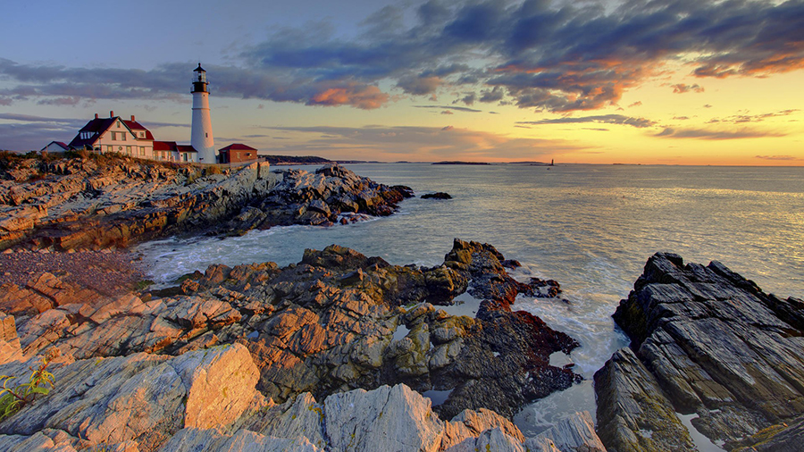

|
Joel Babb is a contemporary realist painter with numerous ties to Maine. Babb graduated with a degree in Art History from Princeton in 1969. He spent a year in Munich and Rome before going to Boston to earn an M.F.A. from the Museum School and Tufts University. He has become known for is cityscapes in Boston, often aerial views from photos taken from a helicopter, but is best known for his commissions for the Charles Hotel in Cambridge, landscapes at the Harvard Business School, and the recreation of the first successful organ transplant for the Countway Library of Medicine at Harvard Medical School. He has had three shows at Vose Galleries in Boston, been in many museum exhibitions and his works can be seen in many collections including the deCordova Museum, the Fogg Art Museum, and the New Britain Museum of American Art. In 2002 Bates College Museum of Art hosted the show Intimate Wilderness: Maine Landscapes by Joel Babb. Babb frequently paints the coast of Maine, and his favorite subjects: the woods and brooks of the interior. His work was the subject of a 2012 book by Carl Little, Nature and Culture: The Art of Joel Babb, published by University Press of New England. http://www.vosegalleries.com/contemporary/bio.cfm?artistid=458 Global water activist, Krisanne Baker of Waldoboro, Maine, is a life-long lover of water; her various works, whether paintings, sculptural installations, or any of her growing list of experimental/documentary short films all focus on concerns for water quality, availability, and water rights. The artist lives on the Medomak River estuary where her observations of the water and her community further inspire her local work, as well as her short art documentary videos on both local and global water issues. Baker researches scientific findings and cultural reports on water issues to inspire her work; she hopes to collaborate with scientists on these issues, putting the visuals in context with the facts. When not in the studio, Baker teaches environmental art and digital imaging at the University of Maine at Farmington. She is currently curating her first multimedia exhibition at UMF in September 2014 titled “Hydrologic: Making Sense With Water.” Baker holds a B.F.A. in Painting, Rhode Island School of Design; M.F.A. in Ecological Art, Vermont College of Art Kevin Beers grew up in the Hudson Valley surrounded by the landscape that informed the Hudson River School genre of American painters. Beers studied at SUNY New Paltz, but shifted to the Art Students League in New York, where he spent three years under full scholarship. He spent fourteen years working as an art director for a major New York advertising agency before he committed himself to painting full time. Beers spends his winters in Brooklyn and his summers on Monhegan Island. Maine Magazine has listed Kevin Beers as one the 60 most important artists in Maine. He is represented by various galleries in Maine and New England including the Banks Gallery in Portsmouth New Hampshire, the True North Gallery, Kennebunk, Maine, Gleason Fine Arts, of Camden and Boothbay Harbor, Maine and The Lupine Gallery, Monhegan Island, Maine. "The plein-air environment provides a pan-sensual experience which, physically limiting at times, requires a distillation of the experience and subsequent representation." – Andre Benoit Andy has been painting Maine all his adult life. He is an avid outdoorsman, plein-air painter, sailor, photographer and primitive woodworker. He is also a highly respected doctor in the Boothbay region. “I know that we cannot foresee or choose our future, but we can search through our past and collect our treasures.“ Mary Bourke grew up on Long Island in a musical and artistic family of nine children. Her childhood memories inform her work, which she says is “about my place in the world.” While her work is rooted in personal experience, Bourke describes simple scenes of harmony and intimacy that we can all relate to. Bourke does not work from direct observation but soaks up images, emotions, and ideas from what she observes, often scenes right beyond her doorstep. Recently, Bourke has been focusing more on the present—specifically, the seasons—with figures playing a smaller role relative to the natural environment. Mary Bourke has a B.A. from Boston College and is represented by Greenhut Galleries. http://www.greenhutgalleries.com/artists/artist.html?name_last=Bourke Sam Cady was born in Boothbay Harbor, Maine and now maintains a studio in Friendship. He attended the University of New Hampshire where he got his B.F.A. and later received his Master of Fine Arts from Indiana University and taught in the Masters of Fine Arts program at the School of Visual Arts in NYC for 23 years. Cady is nationally known for his shaped canvases that closely follow the shapes of actual objects. His familiarity with coastal subjects allows Cady to create icons that show the viewer the world from an acute perspective. Solo exhibitions include the Mary Ryan Gallery in NYC; Howard Yezerski Gallery in Boston; Fuji Gallery in Tokyo, Japan; Castelli/Goodman/Solomon Gallery in East Hampton, New York; and the Caldbeck Gallery. Collectors of his work include the Addison Gallery of American Art, Chase Manhattan Bank, Chemical Bank, the DeCordova Museum, the Farnsworth Art Museum, Fidelity Bank, IBM, Peabody-Essex Museum and Prudential Insurance. He is represented by Caldbeck Gallery of Rockland, Maine. http://www.caldbeck.com/artist/sam-cady “I really enjoy the challenge of painting nontraditional views/subjects and finding the beauty in them, along with the views that make Maine, Maine.” Daniel Corey is a traditional painter whose work is rooted in the aesthetic values of the Ashcan School and the French Impressionists. Inspired by light quality, color harmony and abstract shapes, his paintings are created from direct observation. In 2009, Daniel was awarded the MARC Monhegan Island Residency and currently shows in select galleries throughout Maine and New England. Daniel was named the 2011 Pemaquid Artists Group "artist of the year” and was a participant in the very prestigious 2012 Door County Plein Air event. http://danielcorey.blogspot.com/ Lois Dodd was educated at The Cooper Union in New York City from 1945 to 1948. She was the only woman founder of the Tanager Gallery, which was integral to the Tenth Street-avant-garde scene of the 1950s where artists began running their own coop galleries. As part of the wave of New York modernists to explore the coast of Maine just after the end of the Second World War, Dodd helped to change the face of painting in the state. She currently lives in New York and works in Cushing, Maine in the summer. From 1971 to 1992, Dodd taught at Brooklyn College, and has, since 1980, served on the Board of Governors of the Skowhegan School of Painting and Sculpture. She is an elected member of the American Academy and Institute of Arts and Letters and of the National Academy of Design. Her work is included in many collections and museums in the U.S. and abroad including the collections of Brooklyn College, Bryn Mawr College, Colby College, Cooper Hewitt Art Museum, Dartmouth College Art Museum, Farnsworth Art Museum, National Academy of Design, Museo dell 'Arte, Udine, Italy, Portland Museum of Art, Springfield Art Museum, Wadsworth Atheneum, Whitney Museum Print Collection, and more. In Maine, Dodd is represented by the Caldbeck Gallery, Rockland. http://www.caldbeck.com/artist/lois-dodd “Painting is often an experience in memory for me. I fell in love with Maine while working as a sailing instructor for the Hurricane Island Outward Bound School, and I think I'm still trying to capture some of that feeling in my work. On site I am trying to record the moment, but in the studio I am trying to get back to the place, to the feeling, to the experience." Cooper Dragonette holds a B.F.A. in Painting, from the University of Southern Maine, Gorham, Maine, and a B.A. in education from Prescott College, Prescott, Arizona. Cooper is a full-time landscape painter, teacher, father, and husband living and working in Cape Elizabeth, Maine. Inspired by the history and the scenery of the Maine coast, he has devoted himself to painting the landscape for more than a decade. Cooper primarily paints in oils and has an affinity for painting en plein air. He is currently represented by Elizabeth Moss Gallery in Falmouth, Maine and the George Marshall Store Gallery in York, Maine. http://www.cooperdragonette.com/ “My primary interest in painting is color and light, as well as the process of painting itself…I’m an artist who tries to joyfully express the surroundings I love through color and a sense of place.” Philip Frey was born in Maine and graduated with a B.F.A. in painting from Syracuse University in 1990. Philip lives in Sullivan, Maine where he works full time as an artist and teaches painting workshops. His work centers on both natural and urban landscape, working fishing villages, as well as the figure and interior spaces. He primarily works from life, en plein air and alla prima (all-at-once) as well as with the support of photographic reference when in the studio. He is represented by Courthouse Gallery Fine Art, Gleason Fine Art and The Maine Art Gallery. Barbara Goodbody took her first HIOBS course (Women Over Thirty) in 1981. She went on to become a Trustee of HIOBS for eight years and continues to support the school. She is a philanthropist, community leader, and photographer. In 1986, in mid-life, Barbara Goodbody found her personal passion in photography, inspired by attending the then Maine Photographic Workshop, now the Maine Media Workshop, in Rockport, Maine. Barbara has exhibited her work most recently in Ogunquit Museum of Art and the UNE Art Gallery In the MAINE WOMEN PIONEERS III Exhibition 2013. Her work is in the permanent collection of the Portland Museum of Art, Indianapolis Museum of Art and numerous private collections. “Painting has become my way of moving through this world, expressing and responding to what I feel and see. It is my interpretation using color, stroke, and line to evoke the mood I am receiving from the subject in front of me. Whether a person or a landscape, I want to recreate what I am receiving.” Alison Hill studied at the Art Students League in New York and at the Lyme Academy. She received a B.A. in Psychology and a minor in Art from the University of Rhode Island and went on to earn her M.A. in Art Therapy from Lesley College and her M.A. in Art Education from Rhode Island College. Her work was presented in “Women Artists of Monhegan Island Now” at the University of New England in the summer of 2007. “I was lucky enough to spend my early days on North Haven, where my worldview consisted of roaming the woods, fields, shorelines and exploring the edges where land, water, and sky meet. I was drawn to shapes, spaces, patterns, and the rhythms of nature. I was and still am fascinated by the incredible variety of life forms and forces on this Planet.” Eric is a graduate of Rhode Island School of Design and has taught at Haystack Mountain School of Crafts and Pilchuck Glass School. He has exhibited at the Farnsworth Art Museum, Portland Museum of Art, Center for Maine Contemporary Art, Waterfall Arts Center, University of Maine Museum of Art, and a number of galleries nationally. Eric’s paintings and glass are held in many private and public collections, including the Farnsworth Art Museum, Portland Museum of Art, Bates College Museum of Art, University of Southern Maine, Corning Museum of Glass, Wustum Museum of Fine Arts, and the U.S. Department of State Art in Embassies: Bahamas, Mali, Pakistan, Philippines, and the West Indies. He is also represented in the corporate collections of Central Maine Power, L.L. Bean, Johnson Wax, Sanyo Securities, TD Bank, and Idexx Laboratories. "The light in Maine is crystal clear, with a sharp-edged clarity and a gem-like quality. I often work in the morning or late afternoon when these qualities are especially strong." - Jill Hoy Jill Hoy earned a B.F.A. from the University of California at Santa Cruz and also attended the New York Academy of Art in New York City. Her work has been included in numerous solo and group exhibitions around the country and Europe, and is in over 700 private, corporate and museum collections. Hoy lived and painted with her husband, Jon Imber, and their son, dividing her time among residences in Stonington, Maine, Somerville, Massachusetts, and New York City. Hoy is especially interested in composition, light, color, pattern and place. Her brilliant use of color in the Maine paintings results in surfaces that are richly and intensely painted, with images that seem to shimmer. Because she's been a regular resident of the Deer Isle area since 1965, much of her work can be seen as a document of places and time in the area. The Jill Hoy Gallery in Stonington is in its 28th year. Jessica Lee Ives grew up in Camden, Maine. She received her B.F.A. from The Cooper Union School of Art and was named one of Glamour Magazine’s Top Ten College Women of 2003. Her work as an artist-in-residence at Ground Zero in New York City after September 11, 2001 earned her the Clark Foundation Fellowship with which she pursued her M.A. at NYU, combining work in the fields of art, religion and public service. Jessica is a painter working in a loose but representational style to communicate her playful and adventure-filled relationship with the landscape Maine. She maintains an energetic online presence through her website, blogs, Instagram, and a weekly small works auction hosted by DailyPaintworks. She is editor and curator of The Maine, an online publication devoted to “an artful dialogue about the wonders of the state". "My work is directly related to my growing concern over the protection of wildlife and wild lands in Maine" Janice Kasper has a B.F.A. in Painting from the University of Connecticut. She has studied with the Artist-in-Residence at Unity College (Leonard Craig) and at the Skowhegan School of Painting and Sculpture. Her work is in collections around the country, including the Portland Museum of Art in Portland, ME, the Farnsworth Art Museum in Rockland, ME, and the Hitchcock Collection at the University of Maine at Presque Isle. She has received several grants, including an Artist Resource Trust Grant, a Maine Percent for Art commission and a Good Idea Grant from the Maine Arts Commission. In 2007, Janice received an artist-in-residence position at Denali National Park in Alaska. A few of her most recent solo and group exhibitions include the O'Farrell Gallery formerly of Brunswick, ME, the Katonah Museum of Art in Katonah, NY, and the L.C. Bates Museum in Hinckley, ME. The Caldbeck Gallery has represented her since 1993. http://www.caldbeck.com/artist/janice-kasper Born in Cleveland, Ohio in 1956, Monica Kelly graduated with a B.A. in Visual Arts from Bowdoin College, and pursued graduate studies at the Cleveland Institute of Art. For several years, Kelly taught drawing and painting at the high school level. She lived in San Francisco, France and New York City before moving to Maine in 1989. Kelly has exhibited primarily in Maine, including solo and group shows at the Center for Maine Contemporary Art, Leighton Gallery, Greenhut Galleries and most recently at Ten High Street in Camden. T. Allen Lawson studied painting at the Lyme Academy of Fine Art in Connecticut, the American Academy of Art in Chicago, and the College of Santa Fe in New Mexico. His work has been featured in one-man shows in California, Connecticut, Massachusetts, Maine, New York, Wyoming, and Washington, D.C. Tim is represented by Ten High Street in Camden and by Gerald Peters Gallery in Santa Fe. A self-described child of the ocean and all-around waterman, Jeff loves to paint out of his passion for the sea. His favorite subjects involve dynamic surfing moments and poignant memories of personal sea stories. As a former Outward Bound instructor and course director, he remembers his days on and around Hurricane Island as some to the richest and most challenging times of his life. Living in the deliberate tension of creating authentically challenging experiences, while also being responsible for the safety and well-being of his students and fellow instructors is something he remembers with humility and reverence. David Little was born in New York and holds a Masters in Fine Art from the University of Iowa He completed two seasons of study at the Skowhegan School and fellowships at the Virginia Center for the Creative Arts and the Carina House, Monhegan Island and also studied under his uncle, William Kienbusch. David Little has documented the interior of Maine, and particularly the Katahdin region, for many years now and his views are from a deep love of the discovery of this region. He has exhibited widely in Maine and New York and now resides and paints in Portland, Maine. David's work has appeared in a number of publications including Art of the Maine Coast and Paintings of New England. http://www.artnorthlight.com/p388627325 Ed Nadeau graduated from Syracuse University in 1980 with his B.F.A. in painting and from the Maryland Institute College of Art in 1986 with his M.F.A. in painting. His paintings have been exhibited widely, including the Baltimore Museum of Art, Maryland Art Place, School 33 Art Center, the Park School, the Center for Maine Contemporary Art in Rockport, the University of Maine in Orono, Whitney Art Works in Portland, Maine, and the Drawing Center, NYC. His work is represented by the Courthouse Gallery Fine Art, Ellsworth, Maine and is held in many private collections both nationally and internationally. Nadeau's paintings represent narrative stories that he has nurtured for decades. As an Assistant Professor Nadeau teaches 2-D design, painting and drawing at the University of Maine in Orono and has taught advanced courses in Landscape Painting, Figure Drawing, Nature Drawing and Materials and Techniques for Painters. Tessa Greene O’Brien was born in South Thomaston, Maine, and grew up surrounded by woods, fields, ocean, and in her own words…“creative types.” The landscape and the people continue to inspire her work. She graduated from Skidmore College with a degree in studio art, and spent the next ten years traveling the country and painting sets for music festivals. During this time she fell in love with large-scale painting and was able to work alongside many contemporary artists. When Tessa is not painting in the studio, she paints murals, signs, and decorative finishes for clients. Today Tessa lives and paints in Portland, Maine and is attending the Maine College of Art working towards an M.F.A. in painting. As a child, Tessa spent many summers living on Hurricane Island, running around exploring while her mother Christine prepared meals in the galley, and her father, Tino O'Brien, instructed courses. She formed a deep love and connection to the HIOBS community, and from 2001-2004 taught courses for the land program in Newry. http://www.tessagreenobrien.com/ David Paffhausen is a graduate of the School of the Museum of Fine Arts, Boston and studied hand binding at the Harcourt Bindery of Boston. His hand bound and illustrated books have been exhibited in several places including the Addison Gallery of American Art. Paffhausen works in oils, graphite, pen and ink and printmaking. "Painting is making everyday scenes into the poetic. Through painting a place I find moments of beauty in the space around me. The story I tell as a painter is one of how that particular scene has captured me- how I see beauty in it. At the same time the painting should look as though it breathes, and has a life of its own." – Colin Page Colin Page spent his youth in Maryland, and then studied painting at Rhode Island School of Design and The Cooper Union for the Advancement of Science and Art, receiving his B.F.A. in 2000. Ten years ago he moved to Maine looking for time and space to focus on his painting. He does the majority of his work outside, working from life to capture the light and atmosphere of his subject matter. “Through painting, I share unexpected moments of beauty that I find in the space around me. Painting is how I share the poetry of experience.” He recently had solo shows at the Dowling Walsh Gallery in Rockland, Maine and has participated in numerous group shows internationally. Recently, Colin Page has also received an award for “Artist’s Choice” and “Honorable Mention” at the Maui Plein Air Invitational. http://www.colinpagepaintings.com/ Mike Parenteau obtained his B.S. in Kinesiology with a focus on Outdoor Education from the University of New Hampshire, and immediately launched his professional career in the boathouse at the Hurricane Island Outward Bound School. His experience maintaining remote island bases helped to foster the creativity he currently expresses as an artist, luthier and metalsmith. A native of New Hampshire, Mike now lives and works in St. John, USVI with his beautiful wife and two well-fed cats. Born of Gypsies – in Reading, Mass, in the mid-20th century – Rick found his way to Hurricane Island as the Executive Chef after having started and operated restaurants Loaf and Ladle and Spaghetti Kitchen, and a natural food store, The Green Earth, all in Exeter, NH. Along with “real food” preparation, Rick’s other passion was photography. Rick’s photographic work was featured in many Hurricane Island Outward Bound School brochures and posters through his 20-year stint as Head Chef. Chris Pinchbeck received a B.A. in commercial photography from Brooks Institute in Santa Barbara, California, where his primary focus was commercial, nature and audio-visual. He also received a B.S. in Environmental Conservation from the University of New Hampshire, Durham with minors in Wildlife Management and Wetland Resources. He now combines his love for the landscape with his skills as a photographer and developed a unique pinhole camera where the largest direct positive, one-of-a-kind images were created, etching a small mark in the medium's history. Working both as a commercial and fine art photographer, Pinchbeck has exhibited widely in New England including the Center for Maine Contemporary Art, Boston University and is included in Farnsworth Art Museum’s permanent collection. His images have been published widely in publications internationally. Pinchbeck teaches photography with the Academy of Art University, San Francisco, at Maine Media College and has led several photography workshops with Canadian Mountain Holidays in British Columbia. He worked commercially as Media Director for Moss, Inc. and with Post Office Editorial, helping in the production of the Emmy award winning, Anyplace Wild television series. His work is represented by Aurora Photos and the Dowling Walsh Gallery. http://www.pinchbeckphoto.com/ My photographs are my statement. I don’t pretend or aspire to be terribly intellectual about what I do. I just poke around the nooks and crannies of this coast, always with my camera. That’s about it. Peter Ralston has photographed the coast of Maine since 1978, drawn especially to the working communities that define coastal Maine’s character. Ralston's photography has appeared in thirty-four books and more than fifty magazines, including American Artist, Architectural Digest, Art and Antiques, Connoisseur, National Geographic, New York Times Magazine, Newsweek, People, Smithsonian, and Time, as well as on NBC's Today Show. Galleries in this country and abroad exhibit his images and he had exhibited in many major museums including the Museum of Fine Arts, Boston and the Portland Art Museum. In 2003, his photography, as well as his role as co-founder of the Island Institute, was awarded an Honorary Doctor of Laws Degree at Colby College. In 2010 a documentary short, Peter’s Eye, was produced about his work. http://www.ralstongallery.com/ Born in 1947 in Portland, Maine, Glenn Renell was educated at Rhode Island School of Design, Fort Wright College, and received his M.F.A. in Painting from the University of Massachusetts in 1978. He was a professor of painting, drawing, and design at Maine College of Art for 20 years, resigning in 2001 to paint full time. A landscape painter, Renell works on site, directly from nature, making small paintings whose subject is the experience of seeing and being there. He has cultivated a profound understanding of the relationship between a painter, a place, and a viewer. His perceptive observation of the subtleties of light and the relationships of sky, land, and horizon are beautifully rendered. Glenn now resides in Pearce, Arizona. “Painting plein air in oil is at the heart of my practice—a combination of technical assessment and honoring the inexpressible energy of place.” John Santoro grew up in the village of Cornwall-on-Hudson, in New York’s Hudson Valley. After receiving a B.A. in Communications from the State University of New York in Plattsburgh, he worked for a leading New York prop and display house making scenery for Broadway shows including La Cage aux Folles, Dreamgirls and Cats. In 1984, John moved to Massachusetts where he began a career as a graphic designer, illustrator and artist. In the late 1980s, he moved to Portland, Maine where he currently lives. In 2009, John received a Masters of Fine Art in Visual Art from the Vermont College of Fine Arts in Montpelier. He paints outside, year round, predominantly in oils. His work is held in private, public and corporate collections across the country. Marianne Smith is a self-taught artist who has lived in Camden and Rockport since 1970. In addition to her oil painting, she has worked in clothing design, architectural and interior design, sign carving, stained glass creations, watercolors, and commercial graphic arts. Her work is in many private collections throughout the United States and Canada. http://www.mwsmithgallery.com/artist/artist.htm Susan St. John is a former Hurricane Island Outward Bound School Watch Officer and retired architect with a love of painting in watercolor. She has taught drawing at the Farnsworth Art Museum. “These all pale compared to being outside at Hurricane, the Island Bob and I could see from our bed in Owls Head.” Caleb Stone grew up in the art colony of Rockport, Massachusetts, and there, at an early age, his father Don Stone exposed him to plein air painting. He studied at the Lyme Academy College of Fine Arts in Old Lyme, CT. A painter in both watercolors and oils he has been the recipient of numerous awards including the John Stobart Fellowship Award, The New England Heritage Award, The Wood Award for Excellence in Watercolor, The Land and Light Gold Medal, Best in Show Manchester by the Sea and most recently achieved Elected Artist at the Lyme Art Association. He currently resides on Cape Ann in Massachusetts. Joyce Tenneson is considered among the ten most influential women photographers in the history of photography. Her work has been shown in over 150 exhibitions worldwide and is part of numerous private and museum collections. Her photographs have appeared on covers for magazines such as: Time, Life, Entertainment Weekly, Newsweek, Premiere, Esquire and The New York Times Magazine. Tenneson is the author of fifteen books and she is the recipient of numerous awards, including the International Center of Photography’s Infinity Award, for best applied photography, and the 2012 Lifetime Achievement Award from the Professional Photographers of America. In addition, she has been named “Photographer of the Year” by the international organization Women in Photography. Joyce lives and works in Rockport, Maine. "As a plein-air painter, I respond to what is before me by reflecting on my senses and thoughts. Shape and color drive my painting as I work to define the rhythms I see in nature” Emily Trenholm, a native of Yarmouth, Maine, received her M.F.A. from Boston University. She has shown at Bowery Gallery and Prince Street Gallery in NY, Bromfield Gallery in Boston, and Rose Contemporary in Portland, ME. Emily was awarded the Monhegan Artists’ Residency in 2012 and exhibited paintings from her residency in a solo show at the University of Maine Museum of Art in 2013. Her work is in public and private collections through out the country. Emily currently lives in Brunswick, Maine. http://www.emilyleonardtrenholm.com/ “The act of painting helps me look more closely and honestly at all that is around.” Greta Van Campen is a painter from Thomaston, Maine. She comes from a family of artists and grew up painting beside her mother Susan Headley Van Campen. Greta later continued her studies in visual art at Bowdoin College. Known for her contemporary hard-edged style, Greta’s paintings of intimate and familiar scenes are colorful and bold. Over the years she has captured not only the rhythm of the Maine coast, but (over a course of two years,) Van Campen visited, sketched, photographed and painted all fifty states in the U.S. Ultimately, Van Campen’s paintings offer “a glimpse of America.” But for the artist herself, she says, “making art is its own reward.” Greta has her home and studio in Maine. http://www.gretavancampen.com/ “I am trying to capture the color and shape the first time, that’s all.” Susan Van Campen Susan Headley Van Campen received her certificate of fine art from the Pennsylvania Academy of the Fine Arts in Philadelphia, Pennsylvania. She also attended the Moore College of Art, Philadelphia, Pennsylvania. Known primarily for her floral still lifes and lush, rural landscapes Van Campen attempts to capture “things that don’t last long—like flowers and skies, water, the sunrise, clouds, approaching storms, a dandelion, an open tulip just before the petals fall off.” A resident of Thomaston, Maine, Van Campen has exhibited widely including solo shows at the Pennsylvania Academy of the Fine Arts and Hirschl & Adler, New York. Victoria Woodhull earned a B.F.A. from Colorado State University and an M.F.A. in painting with a minor in art history from the School of the Museum of Fine Arts, Boston and Tufts University. She attended summer workshops at the Banff School of Fine Arts, Alberta, Canada and received several artist residencies including those at the Cummington Community of the Arts, The Edna St. Vincent Millay Colony and the Artists for the Environment Foundation in Walpack, New Jersey. She has served on the Board of Trustees at the Farnsworth Art Museum and is past board president of The Monhegan Artists Residency Program and the Artists Alliance for Art Education. She currently serves the Kenneth Noland Foundation and the Maine Community Foundation Arts Expansion Committee. Over the past 30 years, Woodhull has divided her time between her pursuits in the arts and her many roles with the Hurricane Island Outward Bound School. James Browning Wyeth was born in Wilmington, Delaware, just south of Chadds Ford, Pennsylvania, where he grew up. Since adolescence he has attracted considerable attention as a third-generation American artist: son of Andrew Wyeth, among the country's most popular painters, and the grandson of N.C Wyeth, famous for his distinctive illustrations for the classics by Stevenson, Cooper, and Scott. "Everybody in my family paints - excluding possibly the dogs," says Jamie Wyeth. At age 65 he now divides his time between Chadds Ford and Southern Island, Maine. |
**Indicates artists going to Hurricane Island
